专题4.2 角（举一反三讲义）
【北师大版2024】

【题型1 角的概念】 2
【题型2 钟面角】 4
【题型3 方位角】 7
【题型4 度分秒的换算】 10
【题型5 与角平分线的有关计算】 12
【题型6 角的大小比较】 15
【题型7 尺规作角】 18
【题型8 角n等分线的有关计算】 25
【题型9 三角板中的角度计算】 31
【题型10 旋转成动角问题】 34
 知识点1 角的概念
知识点1 角的概念
1. 角的静态定义：有公共端点的两条射线组成的图形叫作角，这个公共端点是角的顶点，这两条射线是角的两条边．
2. 角的动态定义：角也可以看作由一条射线绕着它的端点旋转而形成的图形．当射线的终止位置和起始位置成一条直线时，形成平角，继续旋转，当射线的终止位置和起始位置重合时，形成周角．
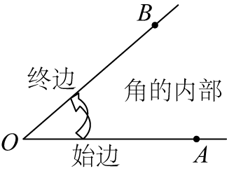
知识点2 角的表示方法
角的常用表示方法有四种
1. 用三个大写字母来表示
在这种表示法中，表示顶点的字母必须写在中间，另两个字母不分顺序．如图（1）中的角有∠AOB，∠BOC，∠AOC．

2. 用一个大写字母来表示
在这种表示法中，表示角的大写字母必须是表示顶点的那个字母，且当两个或两个以上的角有同一个顶点时，不能用这种方法来表示其中的任何一个角．如图(2)中的∠EBC也可以表示为∠B，∠ADC也可以表示为∠D，但∠EAF，∠BAF都不能用∠A来表示．
3. 用一个数字来表示
用数字表示角时，要在角的内部靠近顶点处加上弧线，弧线旁边写上数字．如图（2）中的∠EAF也可以表示为∠1，∠ECD(∠FCD)也可以表示为∠2．
4. 用一个小写希腊字母α，β等来表示
这种方法同用数字表示角的方法类似，也是在角的内部靠近顶点处加上弧线，弧线旁边写上小写希腊字母．如图（3）中的∠AOB也可以表示为∠α．
【题型1 角的概念】
【例1】（1）图中可以用一个大写字母表示的角有 ；
（2）以A为顶点的角有 ；
（3）图中一共 个角（不包括平角）．

【答案】 ∠B，∠C ∠BAD，∠DAC，∠BAC 7
【分析】本题主要考查了角的表示方法，角的个数问题：
（1）顶点处只有一个角的可以用一个大写字母表示即可；
（2）以A为顶点的角有三个，逐一写出即可；
（3）把图中所有角（不包括平角）写出数一数即可．
【详解】解：（1）图中可以用一个大写字母表示的角有∠B，∠C；
故答案为：∠B，∠C．
（2）以A为顶点的角有∠BAD，∠DAC，∠BAC；
故答案为：∠BAD，∠DAC，∠BAC．
（3）图中的角为：∠B，∠C，∠BAD，∠DAC，∠BAC，∠BDA，∠ADC共7个．
故答案为：7．
【变式1-1】（2025·河北·一模）如图，若∠AOC=90°，则边OC可能经过的点为（ ）

A．M B．N C．P D．Q
【答案】B
【分析】本题考查了角的分类，掌握锐角、直角、钝角的概念是解题关键．连接各选项点进行分析即可．
【详解】解：A、连接OM，由图形可知，∠AOM<90°，不符合题意；
B、连接ON，由图形可知，∠AON接近于90°，则边OC可能经过点N，符合题意；
C、连接OP，由图形可知，∠AOP>90°，不符合题意；
D、连接OQ，由图形可知，∠AOQ>90°，不符合题意；
故选：B．
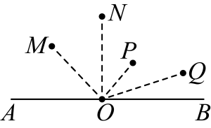
【变式1-2】如图所示，是一副三角尺，上边三角尺的三个角分别为45°，45°，90°，下边三角尺的三个角分别为30°，60°，90°，那么，在①15°；②55°；③75°；④105°中，可以用这副三角尺画出来的是（ ）

A．①③ B．①④ C．②③④ D．①③④
【答案】D
【分析】本题考查了角的和差，熟练掌握角的和差是解题关键．根据角的和差求解即可得．
【详解】解：∵15°=45°−30°，75°=45°+30°，105°=45°+60°，
∴可以用这副三角尺画出来的是①③④，
故选：D．
【变式1-3】如图，在从同一点出发的七条射线OA、OB、OC、OD、OE、OF、OG组成的图形中，共有 个锐角．

【答案】21
【分析】本题主要考查了角的规律探索．找出以OA为始边的角的个数，然后找出相邻的边为始边的角的个数相加即可，按照七条射线角的个数的计算方法即可得到答案．
【详解】解：以OA为始边的角有6个，
以OB为始边的角有5个，
以OC为始边的角有4个，
以OD为始边的角有3个，
以OE为始边的角有2个，
以OF为始边的角有1个，
故共有锐角：6+5+4+3+2+1=21（个）．
故答案为：21．
【题型2 钟面角】
【例2】（25-26九年级上·广东汕头·阶段练习）从6点15分到6点30分，分针旋转的度数为（ ）
A．15° B．30° C．60° D．90°
【答案】D
【分析】本题考查了角的运算，理解题意是解决本题的关键．
根据一小时等于60分钟和一小时分针转360°进行求解即可．
【详解】解：∵一小时等于60分钟，
∴15分钟为1560=14小时，
∵一小时分针转360°，
∴14小时转360°×14=90°，
故选D．
【变式2-1】（25-26七年级上·全国·课后作业）（1）时钟4：50，时针与分针所夹的角是 °．
（2）如图，此时钟面上的时间是10时40分，到11时，时针走过的度数是 ．

【答案】 155或205 10°
【分析】本题考查钟面角，理解钟面角的定义是正确解答的关键．
（1）因为钟表上的刻度是把一个圆平均分成了12等份，每一份是30°，借助图形，找出时针和分针之间相差的大格数，用大格数乘30°即可．
（2）根据钟面角的定义以及图形中的角的和差关系进行计算即可．
【详解】解：（1）钟表上4点50分，时针与分针的夹角可以看成6×30°+30°×5060=205°．或360°−205°=155°．
（2）如图，由钟面角的定义可知，
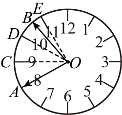
∠AOC=∠COD=360°12=30°，∠BOD=30°×4060=20°，
∴∠AOB=30°×2+20°=80°，
∴∠BOE=30°−20°=10°，
故答案为：（1）205或155（2）10°．
【变式2-2】（25-26七年级上·全国·周测）如图，2时20分，钟表的时针与分针之间所成的较小角的度数是多少？再过1小时，时针与分针之间所成的较小角的度数是多少？时针转动的度数是多少？
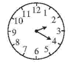
【答案】2时20分：50°再过1h是3时20分：20°时针转动的度数：30°
【分析】本题考查了钟面角，角的计算，掌握钟面角的计算是解题的关键．
结合钟表图形，根据时针一小时转30°，一分钟转0.5°，分针一小时转360°，一分钟转6°计算即可．
【详解】解：因为当时间为2时20分时，时针指向2点和3点之间的靠近刻度3的4060处，分针指向刻度4，
故时针与分针之间所成的较小角度为：360°12×1+4060=50°．
再过1小时是3时20分，同理可得时针与分针之间所成的较小角度为：360°12×4060=20°．
时针转动的度数：360°×112=30°．
所以2时20分，钟表的时针与分针之间所成的较小角的度数是50°，再过1小时，时针与分针之间所成的较小角的度数是20°，时针转动的度数是30°．
【变式2-3】小明去看电影，他在影片刚放映时看了一下手表，影片结束时又看了一下手表，他发现两次看手表的时刻，时针和分针刚好交换了一次，已知这部电影的时间在1−2小时之间，则影片片长为 分钟．
【答案】144013
【分析】本题考查钟面角．
当钟表的时针和分针位置互换时，两针在该时间段内转过的角度之和是360∘的整数倍．
【详解】解：设影片时长为T分钟．分针每分钟走6∘，时针每分钟走0.5∘．
两针转过的角度之和为为6T+0.5T=6.5T．
根据题意，两针位置互换，则其转过的角度之和应为360∘的整数倍，即6.5T=360k（k为正整数）．
可得T=720k13．
因为60<T<120，
所以60<720k13<120，
解得1312<k<136．
因k为正整数，故k=2．
所以T=720×213=144013（分钟）．
因此影片片长为144013分钟．
故答案为：144013．
知识点3 方位角
方位角：以正北、正南方向为基准，描述物体运动的方向，即正北、正南方向与物体运动方向的夹角为方位角．
【题型3 方位角】
【例3】（24-25六年级下·山东淄博·期中）如图，射线OA的方向为南偏西20°，若∠AOB=70°，则射线OB的方向为 ．

【答案】南偏东50°
【分析】本题考查了方位角和角的和差运算的知识，掌握以上知识是解答本题的关键；
本题根据方位角和角的和差运算的知识，进行作答，即可求解；
【详解】解：如图：
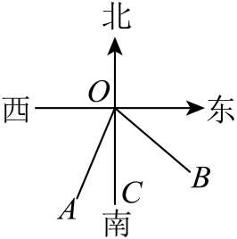
∵射线OA的方向为南偏西20°，
∴∠AOC=20°，
∵∠AOB=70°，
∴∠COB=∠AOB−∠AOC=70°−20°=50°，
即射线OB表示的方向南偏东50°．
故答案为：南偏东50°；
【变式3-1】（24-25七年级上·江苏泰州·开学考试）一次台风的大致路径如下图：
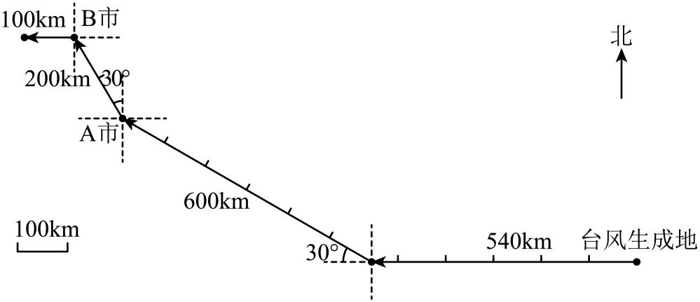
（1）台风生成后，先是沿着正( )方向移动了( )km，然后沿( )( )°方向移动了( )km，到达了A市．
（2）接着，台风又改变方向，沿( )( )°方向移动了( )km，到达了B市．
【答案】 西 540 北偏西 60 600 北偏西 30 200
【分析】本题考查了方向角在生活中的实际应用．根据示意图中的方向指示，结合台风从生成地经A市到B市的实际运行方向和距离解答即可．
【详解】解：（1）根据“上北下南，左西右东”的地图方向，可知：台风从生成地开始沿着正西方向移动了540km，然后沿着北偏西60°移动了600km， 到达了A市．
故答案为：西；540；北偏西；60；600．
（2）同样由“上北下南，左西右东”，可知：接着，台风又改变方向，沿北偏西30°方向移动了200km，到达了B市．
故答案为：北偏西；30；200．
【变式3-2】有公共顶点的两条射线分别表示南偏东15°与北偏东25°，则这两条射线组成的角的度数为（ ）
A．140° B．130° C．120° D．115°
【答案】A
【分析】本题考查了方向角，熟练掌握方向角的运算是解题关键．根据题意画出图形，再根据方向角的运算求解即可得．
【详解】解：由题意，画出图形如下：
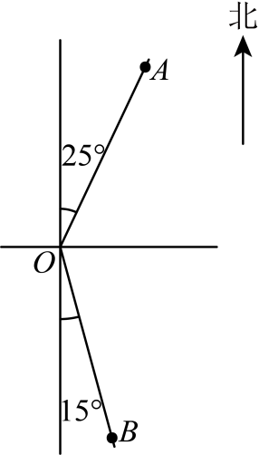
则这两条射线组成的角的度数为∠AOB=180°−15°−25°=140°，
故选：A．
【变式3-3】如图，已知∠AON=15°，∠BON=40°，OA是∠BOC的平分线，OD⊥OB，则（ ）

A．射线OC的方向为东偏北25°
B．射线OC的方向为北偏东65°
C．射线OD的方向为西偏南45°
D．射线OD的方向为南偏西50°
【答案】D
【分析】本题主要考查了方向角，角平分线的定义，垂直的定义，熟悉掌握角度的运算是解题的关键．
根据∠AON=15°，∠BON=40°，OA是∠BOC的平分线，求出∠CON的度数，即可判断A和B，再求出∠BOW的度数，通过垂直的定义求出∠WOD即可判断C和D．
【详解】解：∵∠AON=15°，∠BON=40°，OA是∠BOC的平分线，
∴∠AOC=∠AOB=∠AON+∠BON=15°+40°=55°，
∴∠CON=∠AOC+∠AON=55°+15°=70°，
∴∠COE=90°−∠CON=90°−70°=20°，
∴射线OC的方向为北偏东70°或东偏北20°，故A和B错误；
∵∠BON=40°，
∴∠BOW=90°−∠BON=90°−40°=50°，
∵OD⊥OB，
∴∠WOD=90°−∠BOW=90°−50°=40°，
∴∠DOS=90°−∠WOD=90°−40°=50°，
∴射线OD的方向为西偏南40°或南偏西50°，故C错误，D正确；
故选：D．
知识点4 角的度量单位
1. 角度制的概念：以度、分、秒为单位的角的度量制，叫作角度制．
2. 角的换算：1°=60′，1′=60″；1′=160°，1″=160′．
1直角=90°，1平角=180°，1周角=360°．
【题型4 度分秒的换算】
【例4】若∠α=30.2°，则∠α的余角用度、分、秒表示为（ ）
A．59°8′ B．59°4′8″ C．59°48′ D．59°48″
【答案】C
【分析】本题主要考查了求一个角的余角，度、分、秒单位的换算，解题的关键是掌握余角的定义．
根据余角的定义求出余角，再进行单位换算即可．
【详解】解：90°−α
=90°−30.2°
=59.8°，
59.8°=59°+（0.8×60）′
=59°48′，
故选：C．
【变式4-1】（25-26七年级上·全国·课后作业）计算：
(1)33°15'16''×5．
(2)180°−34°54'+21°33'．
(3)119°57'+32°41'−70°25'13''．
(4)72°35'÷2+18°33'×4．
【答案】(1)166°16'20''
(2)123°33'
(3)82°12'47''
(4)110°29'30''
【分析】本题包含四个角的运算问题，需要根据度、分、秒的进制，按照先乘除后加减、有括号先算括号内的运算顺序进行计算．
【详解】（1）解：原式=165°75'80''=166°16'20''．
（2）解：原式=180°−55°87'=179°60'−56°27'=123°33'．
（3）解：原式=152°38'−70°25'13''=152°37'60''−70°25'13''=82°12'47''．
（4）解：原式=36°17'30''+72°132'=36°17'30''+74°12'=110°29'30''．
【点睛】本题考查了度分秒的四则运算，掌握度、分、秒之间的进制关系，按照运算顺序进行计算是解题的关键．
【变式4-2】学习了角的常用度量单位后，乐乐发现度、分、秒之间可以相互换算，乐乐计算出某一时刻闹钟的时针和分针的夹角是108000″，此时这个夹角等于（ ）
A．5° B．15° C．30° D．60°
【答案】C
【详解】【分析】根据1度=3600秒，进行转化即可.
【详解】108000″=108000÷3600(度)= 30°
故选C：
【点睛】本题考核知识点：角度的换算.解题关键点:熟记角度的转换进率.
【变式4-3】（24-25七年级上·天津西青·期末）在同一平面内有∠AOB=70∘52′，∠BOC=35∘20′，则∠AOC的度数是（ ）
A．106∘12′ B．35∘32′ C．106∘12′或35∘32′ D．105∘72′或35∘32′
【答案】C
【分析】本题考查几何图形中角度计算问题，分射线OC在∠AOB内、外两种情况，画出图形，分别计算即可．
【详解】解：如图1所示，当射线OC在∠AOB内时，
∠AOC=∠AOB−∠BOC=70∘52′−35∘20′=35∘32′；
如图2所示，当射线OC在∠AOB外时，
∠AOC=∠BOC+∠AOB=70∘52′+35∘20′=105∘72′=106∘12′，
综上，∠AOC的度数为35∘32′或106∘12′，
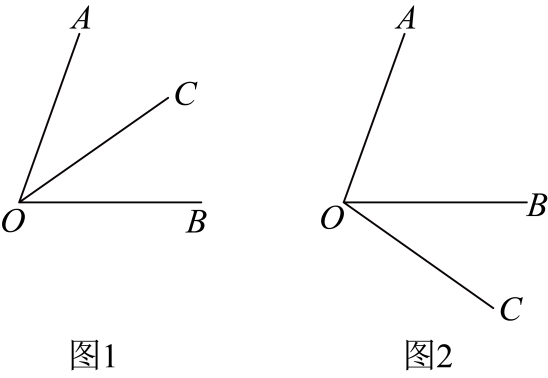
故选C．
知识点5 角的平分线
1. 角的平分线：一般地，从一个角的顶点出发，把这个角分成两个相等的角的射线，叫作这个角的平分线．若OC是∠AOB的平分线，则∠AOC=∠BOC=12∠AOB．反之，若∠AOC=∠BOC=12∠AOB，则OC 是∠AOB 的平分线．
2. 角的n等分线：类似角的平分线，若从角的顶点引出的（n−1）条射线，将这个角分成相等的n个角，则这（n−1）条射线叫作这个角的n等分线．
【题型5 与角平分线的有关计算】
【例5】（25-26七年级上·全国·课后作业）如图，∠AOD=120°，OC平分∠AOD，OB平分∠AOC，下列结论：①∠AOC=∠COD；②∠COD=2∠BOC；③∠AOB与∠COD可以拼成一个直角；④∠AOC与∠AOD可以拼成一个平角，正确的个数有（ ）

A．1个 B．2个 C．3个 D．4个
【答案】D
【分析】此题主要考查角平分线的定义，角的和差计算，解题的关键是熟知角平分线的定义．
根据角平分线的定义求出各角度数，再判断各选项即可．
【详解】∵∠AOD=120°，OC平分∠AOD，
∴∠AOC=∠DOC=12×120°=60°
∵OB平分∠AOC．
∴∠AOB=∠BOC=12×60°=30°，
∴∠AOB+∠COD=30°+60°=90°，∠AOC+∠AOD=60°+120°=180°，
∴①∠AOC=∠COD，正确；
②∠COD=2∠BOC，正确；
③∠AOB与∠COD可以拼成一个直角，正确；
④∠AOC与∠AOD可以拼成一个平角，正确，
故选：D．
【变式5-1】（24-25七年级上·全国·课后作业）如图，已知∠ABP+∠PBC=90°，∠CBD=30°，BP平分∠ABD，则∠ABP= ．
【答案】60°
【分析】本题考查了角平分线的定义，角的和差，解题的关键是掌握相关知识．由角的和差关系可求出∠ABD=120°，再根据角平分线的定义即可求解．
【详解】解：∵ ∠ABP+∠PBC=90°，∠CBD=30°，
∴ ∠ABD=∠ABP+∠PBC+∠CBD=90°+30°=120°，
∵ BP平分∠ABD，
∴ ∠ABP=12∠ABD=60°，
故答案为：60°．
【变式5-2】如图，OM平分∠AOB，ON平分∠COD．若∠MON=80°,∠BOC=50°，则∠AOD的度数为 ．
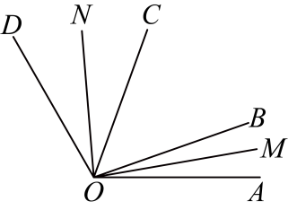
【答案】110°/110度
【分析】本题考查角平分线有关的角的计算．根据角平分线的定义和角的和差可得∠AOD=2∠MON−∠BOC，再把∠MON=80°,∠BOC=50°代入计算即可．
【详解】解：∵OM平分∠AOB，
∴∠AOB=2∠BOM，
∵ON平分∠COD，
∴∠COD=2∠CON，
∵∠MON=∠BOM+∠BOC+∠CON，
∴∠BOM+CON=∠MON−∠BOC，
∴∠AOD=∠AOB+∠BOC+∠COD，
=2∠BOM+2∠CON+∠BOC，
=2∠BOM+∠CON+∠BOC
=2∠MON−∠BOC
=2×80°−50°
=110°，
故答案为：110°．
【变式5-3】（24-25七年级上·陕西西安·期末）如图，在∠AOC中，射线OE平分∠AOC，连接OB，射线OF平分∠BOC．
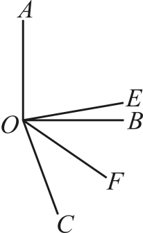
(1)若∠AOB是直角，∠BOC=70°，求∠EOF的度数；
(2)若∠AOC+∠EOF=170°，∠BOC=80°，则∠COE是多少度？
【答案】(1)45°
(2)70°
【分析】本题考查与角平分线有关的计算，找准角之间的和差关系是解题的关键：
（1）根据直角结合角的和差关系得到∠AOC的度数，角平分线求出∠COE,∠COF的度数，再根据角的和差关系进行求解即可；
（2）根据角平分线和角的和差关系推出3∠COE−40°=170°，即可得出结果．
【详解】（1）解：∵∠AOB是直角，
∴∠AOB=90°，
∴∠AOC=∠AOB+∠BOC=160°，
∵射线OE平分∠AOC，射线OF平分∠BOC，
∴∠COE=12∠AOC=80°，∠COF=12∠BOC=35°，
∴∠EOF=∠COE−∠COF=45°；
（2）∵射线OE平分∠AOC，射线OF平分∠BOC，
∴∠COF=12∠BOC=40°，∠AOC=2∠COE，
∵∠AOC+∠EOF=170°，
∴2∠COE+∠COE−∠COF=170°，即：3∠COE−40°=170°，
∴∠COE=70°．
知识点6 角的比较
1. 叠合法：把要比较的两个角的一条边叠合在一起，通过观察另一条边的位置比较两个角的大小．
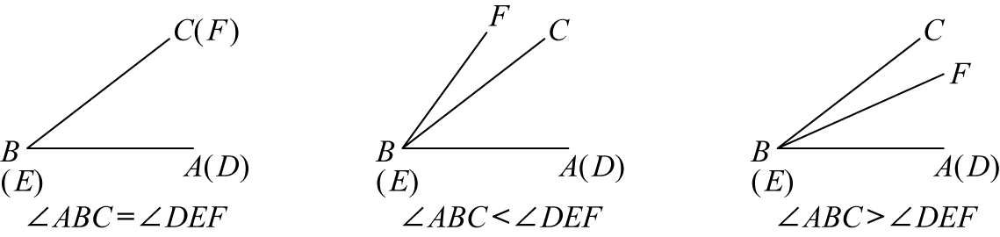
2. 度量法：用量角器量出角的度数，再根据度数比较角的大小．
【题型6 角的大小比较】
【例6】如图，正方形的网格纸上每个小正方形的边长都为1，则下列结论正确的是（ ）

A．∠α<∠β B．∠α>∠β C．∠α=∠β D．无法判断
【答案】B
【分析】本题主要考查了角的大小关系，利用平移的方法求解即可．将∠α平移，使∠α、∠β顶点重合，即可比较大小．
【详解】解：将∠α平移，使∠α、∠β顶点重合，
∠β在∠α内部，
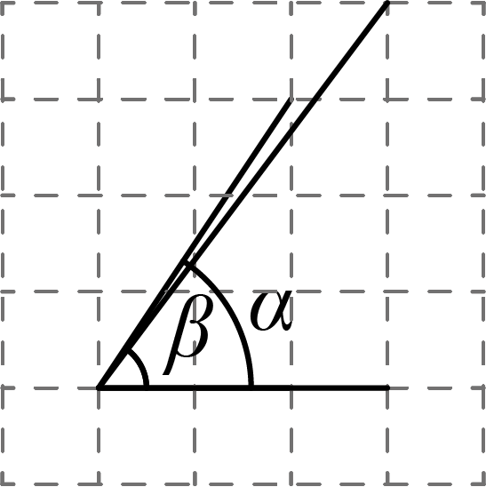
【变式6-1】
（1）因为OA与OA是公共边，边OC在∠AOB的 ，所以∠AOC ∠AOB；
（2）因为OA与OA是公共边，边OD与边OC叠合，所以∠AOC ∠AOD；
（3）因为OB与OB是公共边，边OA在 的 ，所以∠BOC ∠BOA．
【答案】（1）内部，＜；（2）=；（3）∠BOC，外部，＜
【分析】（1）根据图形及角度关系即可判断；
（2）根据图形及角度关系即可判断；
（3）根据图形及角度关系即可判断．
【详解】由图可知：（1）因为OA与OA是公共边，边OC在∠AOB的内部，所以∠AOC＜∠AOB
故答案为：内部；＜；
（2）因为OA与OA是公共边，边OD与边OC叠合，所以∠AOC=∠AOD
故答案为：=；
（3）因为OB与OB是公共边，边OA在∠BOC的外部，所以∠BOC＜∠BOA．
故答案为：∠BOC；外部；＜．
【点睛】此题主要考查角度之间的关系，解题的关键是根据图形数形结合进行求解．
【变式6-2】如图所示表示两块三角板．

（1）用叠合法比较∠1，∠α，∠2的大小；
（2）量出图中各角的度数，并把图中的6个角从小到大排列，然后用“＜”或“＝”连接．
【答案】（1）∠2＝∠1＞∠α；（2）∠α＜∠1＝∠2＜∠β＜∠3＝∠γ
【分析】1）将角的顶点重合，角的两边重合，看第三边的位置关系，分类判断即可；
（2）用量角器测量比较即可．
【详解】解：（1）如图所示，把两块三角板叠在一起，可得∠1＞∠α，用同样的方法，
可得∠α＜∠2．所以∠2＝∠1＞∠α．

（2）用量角器量出图中各个角的度数，分别是∠1＝∠2＝45°，∠3＝90°，∠α＝30°，∠β＝60°，∠γ＝90°，
把它们从小到大排列，有∠α＜∠1＝∠2＜∠β＜∠3＝∠γ．
【点睛】本题考查了了角的大小比较的方法，熟练掌握叠合法和度量法两种：①先将两个角的顶点与顶点重合，一条边与一条边重合再比较．②先量出每个角的度数，然后按它们的度数来比较，是解题的关键．
【变式6-3】（24-25七年级上·四川自贡·期末）若∠1=38°15′，∠2=38.15°，∠3=38.25°，则下面说法正确的是（ ）
A．∠1=∠2 B．∠2=∠3
C．∠1=∠3 D．∠1，∠2，∠3互不相等
【答案】C
【分析】本题主要考查度分秒的换算，熟练掌握度分秒的换算规则是解题的关键．将∠1进行换算，即可得到答案．
【详解】解：∠1=38°15′=38.25°，
故∠1=∠3，
故选C．
【题型7 尺规作角】
【例7】如图，已知两个角∠1和∠2，求作一个角∠3=∠1+2∠2．
【答案】见解析
【分析】此题主要考查作一个角等于已知角的作法．先依次作∠COD=∠BOD=∠2，再作∠AOB=∠1，则∠AOC就是所求的角．
【详解】解：如图
所以，∠AOC就是所求的∠3．
【变式7-1】如图，点C在∠AOB的边OB上，用尺规作出了CN∥OA，作图痕迹中弧FG是（ ）

A．以点C为圆心，OD长为半径的弧
B．以点C为圆心，DM长为半径的弧
C．以点E为圆心，OD长为半径的弧
D．以点E为圆心，DM长为半径的弧
【答案】D
【分析】本题考查了同位角相等两直线平行，尺规作一个角等于已知角，解题关键是掌握上述知识．
根据同位角相等两直线平行，得出CN∥OA，由此判断作图方法．
【详解】解：通过作∠BCN=∠AOC，依据同位角相等两直线平行，得到CN∥OA，所以作图痕迹中弧FG是以点E为圆心，DM长为半径的弧，
故选：D．
【变式7-2】如图，已知∠AOB与∠EO′F，分别以O，O′为圆心，以同样长为半径画弧，分别交OA，OB于点A′，B′，交O′E，O′F于点E′，F′．以B′为圆心，以E′F′长为半径画弧，交弧A′B′于点H，下列结论不正确的是（ ）
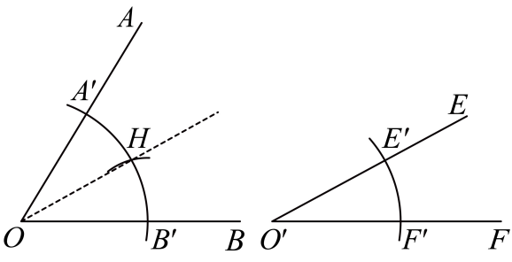
A．∠AOB=2∠EO′F B．∠AOB>∠EO'F
C．∠HOB=∠EO′F D．∠AOH=∠AOB−∠EO′F
【答案】A
【分析】本题考查了作一个角等于已知角，角度的和差计算．根据作图可知∠EO′F=∠HOB，结合图形，根据角度的和差关系逐项分析判断即可求解．
【详解】解：根据作图可知∠EO′F=∠HOB，
A、不能判断∠AOB=2∠EO′F，故该选项不正确，符合题意；
B、∵∠AOB>∠HOB，即∠AOB>∠EO′F，故该选项正确，不符合题意；
C、∠HOB=∠EO′F，故该选项正确，不符合题意；
D、∠AOH=∠AOB−∠HOB=∠AOB−∠EO′F，故该选项正确，不符合题意；
故选：A．
【变式7-3】如图为一副三角尺，其中∠α=60°,∠β=45°，作∠ABC=120°,∠DEF=15°．
（要求：尺规作图，保留作图痕迹，不写作法）
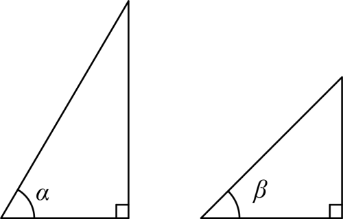
【答案】图见解析
【分析】本题考查尺规作角，根据尺规作角的方法，作图即可．掌握尺规作角的方法，是解题的关键．
【详解】解：如图，∠ABC,∠DEF即为所求；
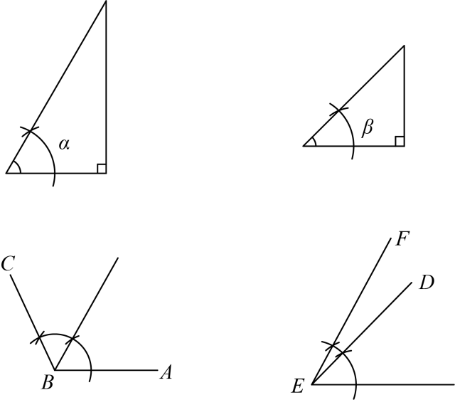
【题型8 角n等分线的有关计算】
【例8】（24-25七年级下·重庆·开学考试）如图1，已知∠AOB=120°，∠COD=60°，OM在∠AOC内，ON在∠BOD内，∠AOM=13∠AOC，∠BON=13∠BOD．（本题中所有角均大于0°且小于等于180°）

(1)∠COD从图1中的位置绕点O逆时针旋转到OC与OB重合时，如图2，则∠MON=____°；
(2)∠COD从图2中的位置绕点O顺时针旋转n°（0<n<180且n≠60a，其中a为正整数），直接写出所有使∠MON=2∠BOC的n值．
【答案】(1)100
(2)50或70
【分析】本题考查了角的计算，分情况画图讨论是解题的关键．
（1）当∠COD从图1中的位置绕点O逆时针旋转到OC与OB重合时，如图2，可得∠MON=∠MOB+∠BON，再根据已知条件进行计算即可；
（2）根据∠COD从图2中的位置绕点O顺时针旋转n°（0<n<180且n≠60a，其中a为正整数），∠MON=2∠BOC，分两种情况画图：①当0<n<60时，如图3，②当60<n<180时，如图4和5，结合（2）进行角的和差计算即可．
【详解】（1）解：∵∠AOM=13∠AOC，∠BON=13∠BOD，
∴∠MOC=23∠AOC，∠DON=23∠BOD，
当∠COD从图1中的位置绕点O逆时针旋转到OC与OB重合时，如图2，
∴∠MON=∠MOB+∠BON
=23∠AOC+13∠BOD
=23×120°+13×60°
=80°+20°
=100°，
故答案为：100；
（2）解：∠COD从图2中的位置绕点O顺时针旋转n°（0<n<180且n≠60a，其中a为正整数），∠MON=2∠BOC，
①当0<n<60时，如图3，
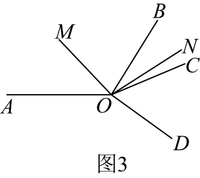
∵∠BOC=n°，
∴∠MON=2∠BOC=2n°，
∴∠AOC=∠AOB+∠BOC=120°+n°，
∠BOD=∠BOC+∠DOC=n°+60°，
∴∠MON=∠MOC+∠DOC−∠DON
=23(120°+n°)+60°−23(n°+60°)
=100°，
∴2n°=100°，
∴n=50；
②当60<n<120时，如图4，
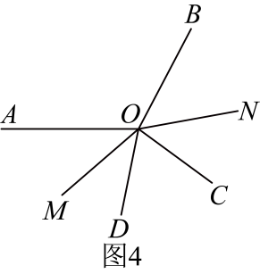
∵∠BOC=n°，
∴∠MON=2∠BOC=2n°，
∴∠AOC=360°−(∠AOB+∠BOC)=360°−(120°+n°)=240°−n°，
∠BOD=∠BOC+∠DOC=n°+60°，
∴∠MON=360°−∠AOM−∠AOB−∠BON
=360°−13(240°−n°)−120°−13(60°+n°)
=140°，
∴2n°=140°，
∴n=70；
当120<n<180时，如图5，
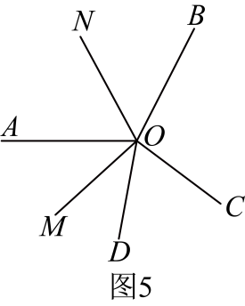
∴∠AOD=360°−∠AOB−∠BOC−∠COD=360°−120°−n°−60°=180°−n°，
∴∠AOC=∠AOD+∠COD=180°−n°+60°=240°−n°，
∠BOD=∠AOD+∠AOB=180°−n°+120°=300°−n°，
∵∠AOM=13∠AOC，∠BON=13∠BOD，
∴∠AOM=80°−13n，∠BON=100°−13n，
∴∠MON=∠BOM−∠BON
=(∠AOB+∠AOM)−∠BON
=(120°+80°−13n)−(100°−13n)
=100°，
∴2n°=100°，
∴n=50，不合题意；
综上所述：n的值为50或70．
【变式8-1】如图所示，若点A，O，B在一条直线上，OM平分∠AOC，∠BON:∠CON=1:4，当∠AOM=20°时，∠CON等于（ ）
A．112° B．132° C．28° D．140°
【答案】A
【分析】此题主要考查了角平分线的定义：从一个角的顶点出发，把这个角分成相等的两个角的射线叫做这个角的平分线．同时考查了邻补角定义．根据角平分线可得∠AOC=40°，进而可得∠BOC=140°，再利用角之间的比例关系可得答案．
【详解】解：∵OM平分∠AOC，∠AOM=20°，
∴∠AOC=2∠AOM=40°，
∴∠COB=180°−40°=140°，
∵∠BON:∠CON=1:4，
∴∠CON=140°×45=112°，
故选：A．
【变式8-2】如图，射线OC在∠AOB的内部，图中共有3个角：∠AOB，∠AOC和∠BOC，若其中有一个角的度数是另一个角度数的两倍，则称射线OC是∠AOB的“平衡线”.若∠AOB=78°，且射线OC是∠AOB的“平衡线”，则∠AOC的度数为 ．
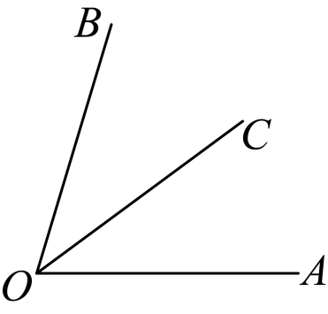
【答案】26°或39°或52°
【分析】本题主要考查了角的和差，几何图形中角的计算，正确分情况讨论是解题关键．分①∠AOB=2∠AOC，②∠AOB=2∠BOC，③∠AOC=2∠BOC，④∠BOC=2∠AOC四种情况，再根据角的和差进行计算即可得．
【详解】解：由题意，分以下四种情况：
①当∠AOB=2∠AOC时，射线OC是∠AOB的“平衡线”，
∵∠AOB=78°，
∴∠AOC=12∠AOB=39°；
②当∠AOB=2∠BOC时，射线OC是∠AOB的“平衡线”，
∵∠AOB=78°，
∴∠BOC=12∠AOB=39°，
∴∠AOC=∠AOB−∠BOC=39°；
③当∠AOC=2∠BOC时，射线OC是∠AOB的“平衡线”，
∵∠AOB=78°，∠AOC+∠BOC=∠AOB，
∴∠AOC+12∠AOC=78°，
解得∠AOC=52°；
④当∠BOC=2∠AOC时，射线OC是∠AOB的“平衡线”，
∵∠AOB=78°，∠AOC+∠BOC=∠AOB，
∴∠AOC+2∠AOC=78°，
解得∠AOC=26°；
综上，∠AOC的度数为26°或39°或52°，
故答案为：26°或39°或52°．
【变式8-3】如图1，直线AB与CD相交于点O，使∠BOC=120°．将一直角三角尺的直角顶点放在O处，即∠MON=90°．

(1)当三角尺一边OM在∠BOC的内部，且为∠BOC的三等分线，求∠BON的度数？
(2)当三角尺一边ON在∠AOC的内部（图2），求∠AOM−∠CON的值？
【答案】(1)10°
(2)30°
【分析】本题考查了等分角问题，角的和差；
（1）由OM为∠BOC的三等分线，得∠BOM=13∠BOC
=40°，或∠BOM=23∠BOC =80°，即可求解；
（2）由角的和差得∠AOM=90°−∠AON，∠NOC=60°−∠AON，即可求解；
能根据角的等分线不确定性分类求解，用已知角的和差表示所求角是解题的关键．
【详解】（1）解：∵ OM为∠BOC的三等分线，
∴ ∠BOM=13∠BOC
=40°，
或∠BOM=23∠BOC
=80°，
∴ ∠BON=90°−40°=50°，
或∠BON=90°−80°=10°；
故∠BON的度数为50°或10°；
（2）解：∵∠MON=90°，
∠AOC=60°，
∴∠AOM=90°−∠AON，
∠NOC=60°−∠AON，
∴∠AOM−∠NOC
=90°−∠AON−60°−∠AON
=30°．
【题型9 三角板中的角度计算】
【例9】如图，将一副直角三角板的直角顶点C叠放在一起．

(1)若∠DCE=35°，则∠BCA= ；
(2)若∠ACB=150°，则∠DCE= ；
(3)若∠DCE:∠ACB=2:7，求∠DCE的度数．
【答案】(1)145°；
(2)30°；
(3)40°．
【分析】本题主要考查了角的运算．
（1）根据∠BCE=90°和∠DCE=35°，可以求出∠BCD=55°，再根据∠BCA=∠BCD+∠ACD即可求出结果；
（2）根据∠ACB=150°和∠ACD=∠BCE=90°，即可求出∠BCD=60°，再根据∠BCE=90°，即可求出∠DCE的度数；
（3）设∠DCE=2x，∠ACB=7x，又因为∠ACD=∠BCE=90°，即可得到：∠BCD=7x−90°，因为∠DCE+∠BCD=∠BCE，即可得到2x+7x−90°=90°，解方程求出x的值，即可得到∠DCE的度数．
【详解】（1）解：由题意得，∠ACD=∠BCE=90°，
∵∠DCE=35°，
∴∠BCD=∠BCE−∠DCE=90°−35°=55°，
∴∠BCA=∠BCD+∠ACD=55°+90°=145°，
故答案为：145°；
（2）解：由题意得，∠ACD=∠BCE=90°，
∵∠ACB=150°，
∴∠BCD=∠ACB−∠ACD=150°−90°=60°，
∴∠DCE=∠BCE−∠BCD=90°−60°=30°，
故答案为：30°；
（3）解：∵∠DCE:∠ACB=2:7，
设∠DCE=2x，∠ACB=7x，
由题意得，∠ACD=∠BCE=90°，
∴∠BCD=∠ACB−∠ACD=7x−90°，
∵∠DCE+∠BCD=∠BCE，
∴2x+7x−90°=90°，
解得：x=20°，
∴∠DCE=2x=40°．
【变式9-1】将一副三角板中的两块直角三角尺的直角顶点C按如图方式叠放在一起，则∠ACB+∠ECD= ．

【答案】180°/180度
【分析】本题考查了角的和差运算，根据∠ACD=∠ECB=90°，进一步利用角的和差即可作答．
【详解】解：∵∠ACD=∠ECB=90°，
∴∠ACB+∠DCE=∠ACD+∠BCD+∠DCE=∠ACD+∠BCE=180°.
故答案为：180°．
【变式9-2】（25-26八年级上·全国·阶段练习）如图，把一个三角尺的直角顶点D放置在△ABC内，使它的两条直角边DE，DF分别过点B，C，如果∠A=40°，那么∠ABD+∠ACD的度数是（ ）
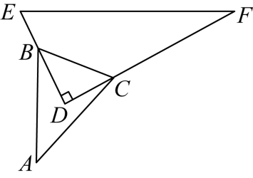
A．50° B．60° C．70° D．40°
【答案】A
【分析】本题考查了三角形内角和定理的应用，注意：三角形的内角和等于180°．根据三角形的内角和定理求出∠ABC+∠ACB=140°，∠DBC+∠DCB=90°，即可求出答案．
【详解】解：∵∠A=40°，∠EDF=90°，
∴∠ABC+∠ACB=180°−40°=140°，∠DBC+∠DCB=180°−90°=90°，
∴∠ABD+∠ACD=(∠ABC+∠ACB)−(∠DBC+∠DCB)=140°−90°=50°，
故选：A．
【变式9-3】（24-25七年级上·河南开封·期末）如图，将一副三角尺叠放在一起，使它们的直角顶点重合．
(1)若∠DCE=35°，求∠ACB的度数；
(2)若∠ACB=140°，求∠DCE的度数；
(3)猜想∠ACB与∠DCE之间的数量关系，并说明理由．
【答案】(1)145°
(2)40°
(3)∠ACB+∠DCE=180°，理由见解析
【分析】本题题主要考查了几何图形中角度的计算，解决本题的关键是理解重叠的部分实质是两个角的重叠．
（1）由∠DCE=35°，∠ACD=90°求出∠ACE的度数，由∠ECB=90°即可得出∠ACB=∠ACE+∠ECB；
（2）由∠ACB=140°，∠ECB=90°求出∠ACE的度数，由∠ACD=90°即可求出∠DCE=∠ACD−∠ACE；
（3）由于∠ACD=∠ECB=90°，即可得∠ACE+∠ECD+∠ECD+∠DCB=180°，所以∠ACB+∠DCE=180°．
【详解】（1）由题可知：∠DCE=35°，∠ACD=90°，
∴∠ACE=∠ACD−∠DCE=90°−35°=55°，
∵∠ECB=90°，
∴∠ACB=∠ACE+∠ECB=55°+90°=145°；
（2）∵∠ACB=140°，∠ECB=90°，
∴∠ACE=∠ACB−∠ECB=140°−90°=50°，
∵∠ACD=90°，
∴∠DCE=∠ACD−∠ACE=90°−50°=40°；
（3）∵∠ACD=∠ECB=90°，
∴∠ACE+∠ECD+∠ECD+∠DCB=180°，
∴∠ACB+∠DCE=180°．
【题型10 旋转成动角问题】
【例10】（24-25七年级上·湖南岳阳·期末）已知，OC是∠AOB内部的一条射线，且∠AOB=3∠AOC．
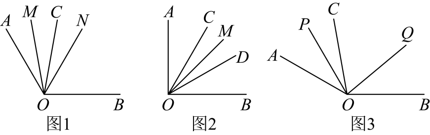
(1)如图1所示，若∠AOB=120°，OM平分∠AOC，ON平分∠AOB，求∠MON的度数；
(2)如图2所示，∠AOB是直角，从点O出发在∠BOC内引射线OD，满足∠BOC−∠AOC=∠COD，若OM平∠COD，求∠BOM的度数；
(3)如图3所示，若∠AOB=150°，射线OP，射线OQ分别从OC,OB出发，并分别以每秒1D和每秒20的速度绕着点O逆时针旋转，OP和OQ分别只在∠AOC和∠BOC内部旋转，运动时间为t秒．当∠AOP=13∠QOP，求t的值．
【答案】(1)∠MON=40°
(2)∠BOM=45°
(3)当t=25时，∠AOP=13∠QOP
【分析】本题主要考查几何图形中角平分线的定义的计算，一元一次方程解几何问题，理解图示，掌握一元一次方程解几何问题是解题的关键．
（1）根据图示，运用角平分线的定义可得∠AOM=20°，∠AON=60°，由∠MON=∠AON−∠AOM=60°−20°=40°即可求解；
（2）根据题意可得∠BOC=60°，∠COM=12∠COD=15°，由∠BOM=∠BOC−∠COM=45°即可求解；
（3）根据题意可得∠AOP=50°−t°，∠COQ=100−2t°，则∠QOP=∠COQ+∠COP=100−2t°+t°=100−t°，由此列式得50°−t°=13100−t°，解方程即可求解．
【详解】（1）解：∵∠AOB=3∠AOC，∠AOB=120°，
∴∠AOC=13×120°=40°，
∵OM平分∠AOC，ON平分∠AOB，
∴∠AOM=12∠AOC，∠AON=12∠AOB，
∴∠AOM=20°，∠AON=60°，
∴∠MON=∠AON−∠AOM=60°−20°=40°；
（2）解：∵∠AOB=90°，∠AOB=3∠AOC，
∴∠AOC=30°，
∴∠BOC=60°，
∵∠BOC−∠AOC=∠COD，
∴∠COD=60°−30°=30°，
∵OM平分∠COD，
∴∠COM=12∠COD=15°，
∴∠BOM=∠BOC−∠COM=45°；
（3）解：∵∠AOB=150°，∠AOB=3∠AOC，
∴∠AOC=13∠AOB=50°，∠BOC=100° ，
∴∠COP=t°，∠BOQ=2t°，
∴∠AOP=50°−t°，∠COQ=100−2t°，
∴∠QOP=∠COQ+∠COP=100−2t°+t°=100−t°，
∵∠AOP=13∠QOP，
∴50°−t°=13100−t°，
∴t=25，
∴当t=25时候，∠AOP=13∠QOP．
【变式10-1】如图，OE⊥AB于点O，∠COE=15°，射线OM从OA出发，绕点O以每秒60°的速度顺时针向终边OB旋转，当OM到达OB时停止旋转.

（1）∠AOC的度数为 .
（2）当OM旋转了 秒时，∠MOC=105度.
【答案】 75° t=12或t=3
【分析】本题考查几何图形中角度的计算．正确的识图，理清角之间的和差关系，是解题的关键．
（1）根据余角的定义求出答案即可；
（2）设运动时间为t，根据题意分情况进行讨论．
【详解】解：（1）∵OE⊥AB
∴∠AOE=90°
∵∠COE=15°
∴∠AOC=90°−15°=75°，
故答案为：75°；
（2）设运动时间为t，
根据题意可得∠AOM=60°t，
当0<t≤32时，
此时∠MOC=∠AOC+∠AOM=75°+60°t=105°
解得t=12；
当32<t≤3时，
此时∠MOC=∠BOC+∠BOM=180°−∠AOC+180°−∠AOM=360°−75°−60°t=105°解得t=3；
综上所述，t=12或t=3秒时，∠MOC=105度．
【变式10-2】（24-25七年级上·河北沧州·期中）如图1，点A，O，B依次在直线MN上；如图2，现将射线OA绕点O沿顺时针方向以每秒2°的速度旋转，同时射线OB绕点O沿逆时针方向以每秒4°的速度旋转，设旋转时间为t秒（0≤t≤90）．下列说法正确的是（ ）
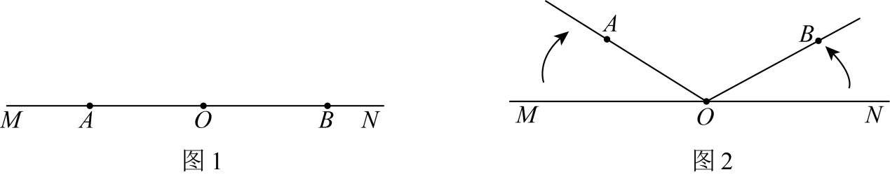
A．当t值为10秒时，∠AOB=100°
B．整个运动过程中，不存在∠AOB=90°的情况
C．当∠AOB=60°时，两射线的旋转时间t一定为20秒
D．当t值为36秒时，射线OB恰好平分∠MOA
【答案】D
【分析】本题主要考查了角的运算，角平分线，一元一次方程的应用等知识，根据角的运算，角平分线，一元一次方程的应用逐一排除即可，掌握知识点的应用是解题的关键．
【详解】解：A、当t=10时，∠AOM=20°，∠BON=40°，
∴∠AOB=180°−20°−40°=120°，原选项说法错误，不符合题意；
B、由题意得∠AOB=90°，
当0<t<45时，∠AON=180°−2°t，∠BON=4°t，
则180−2t−4t=90，
解得t=15，
∴整个运动过程中，存在∠AOB=90°的情况，原选项说法错误，不符合题意；
C、由题意得∠AOB=60°，
当0≤t≤45时，∠AON=180°−2°t，∠BON=4°t，
则180−2t−4t=60，
解得t=20，
当45<t≤90时，∠AON=180°−2°t，∠BON=360°−4°t，
则180−2t+360°−4t=60，
解得t=80，
∴当∠AOB=60°时，两射线的旋转时间t为20或80秒，原选项说法错误，不符合题意；
D、当t=36时，∠AOM=72°，∠MOB=180°−4°×36=36°，
∴∠MOB=12∠MOA，原选项说法正确，符合题意；
故选：D．
【变式10-3】（24-25七年级上·四川成都·期末）点O是直线AB上的一点，射线OC从OA出发绕点O顺时针方向旋转，旋转到OB停止，设∠AOC=α0°≤α≤180°，射线OD⊥OC，作射线OE平分∠BOD．

(1)如图1，若α=40°，且OD在直线AB的上方，求∠DOE的度数．
(2)射线OC顺时针旋转一定的角度得到图2，当射线OD在直线AB的下方时，其他条件不变，请你用含α的代数式表示∠DOE的度数．
(3)射线OC从OA出发绕点O顺时针方向旋转到OB，在旋转过程中你发现∠DOE与∠AOC（0°≤∠AOC≤180°，0°≤∠DOB≤180°）之间有怎样的数量关系？请你直接用含α的代数式表示∠DOE的度数．
【答案】(1)∠DOE=25°
(2)∠DOE=12α−45°
(3)∠DOE的度数是45°−12α或12α−45°或45°+12α或135°−12α
【分析】（1）根据α=40°，∠COD=90°，求出∠BOD=50°，根据OE平分∠BOD，即可得出结果；
（2）先用α表示出∠BOC，再根据∠COD=90°表示出∠BOD，根据OE平分∠BOD，即可得出结果；
（3）分四种情况进行讨论，分别求出∠DOE与∠AOC的关系，用含α的代数式表示∠DOE的度数即可．
【详解】（1）解：∵OD⊥OC，
∴∠COD=90°，
∵α=40°，即∠AOC=40°，
∴∠BOD=180°−∠COD−∠AOC=50°，
∵OE平分∠BOD，
∴∠DOE=12∠BOD=25°．
（2）解：∵∠AOC=α，
∴∠BOC=180°−α，
∵OD⊥OC，
∴∠COD=90°，
∴∠BOD=∠COD−∠BOC
=90°−180°−α
=α−90°
∵OE平分∠BOD，
∴∠DOE=12∠BOD=12α−45°．
（3）解：①当0°≤∠AOC≤90°，OD在直线AB的上方时，如图所示：

∠BOD=180°−∠COD−∠AOC
=180°−90°−∠AOC
=90°−∠AOC，
∵OE平分∠BOD，
∴∠DOE=12∠BOD=45°−12∠AOC，
即∠DOE=45°−12α．
②当0°≤∠AOC≤90°，OD在直线AB的下方时，如图所示：
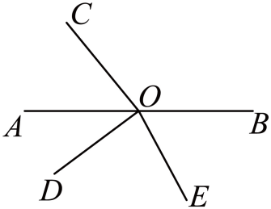
∵∠AOD=∠COD−∠AOC=90°−∠AOC，
∴∠BOD=180°−∠AOD=90°+∠AOC，
∵OE平分∠BOD，
∴∠DOE=12∠BOD=45°+12∠AOC，
即∠DOE=45°+12α．
③当90°＜∠AOC≤180°，OD在直线AB的上方时，如图所示：
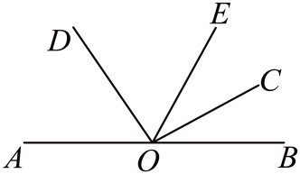
∵∠BOC=180°−∠AOC，
∴∠BOD=∠DOC+∠BOC
=90°+180°−∠AOC
=270°−∠AOC，
∵OE平分∠BOD，
∴∠DOE=12∠BOD=135°−12∠AOC，
即∠DOE=135°−12α．
④当90°<∠AOC≤180°，OD在直线AB的下方时，如图所示：
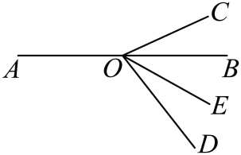
∵∠BOC=180°−∠AOC，
∴∠BOD=∠COD−∠BOC
=90°−180°−∠AOC
=∠AOC−90°，
∵OE平分∠BOD，
∴∠DOE=12∠BOD=12∠AOC−45°，
即∠DOE=12α−45°．
综上分析可知， ∠DOE=45°−12α或∠DOE=45°+12α或∠DOE=135°−12α或∠DOE=12α−45°．
【点睛】本题主要考查了角平分线的定义，垂直的定义，根据α的大小和OD的位置分类讨论，是解决本题的关键．